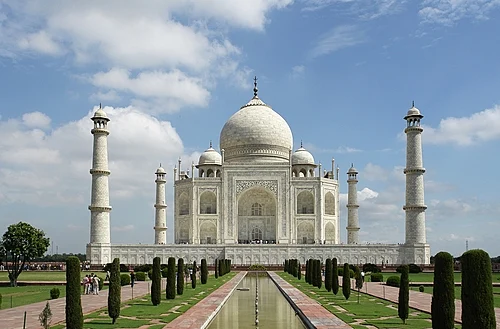
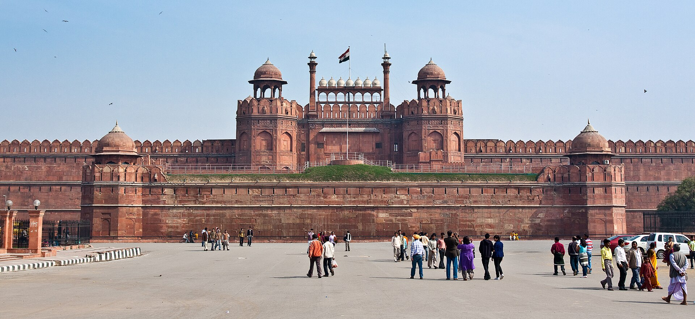
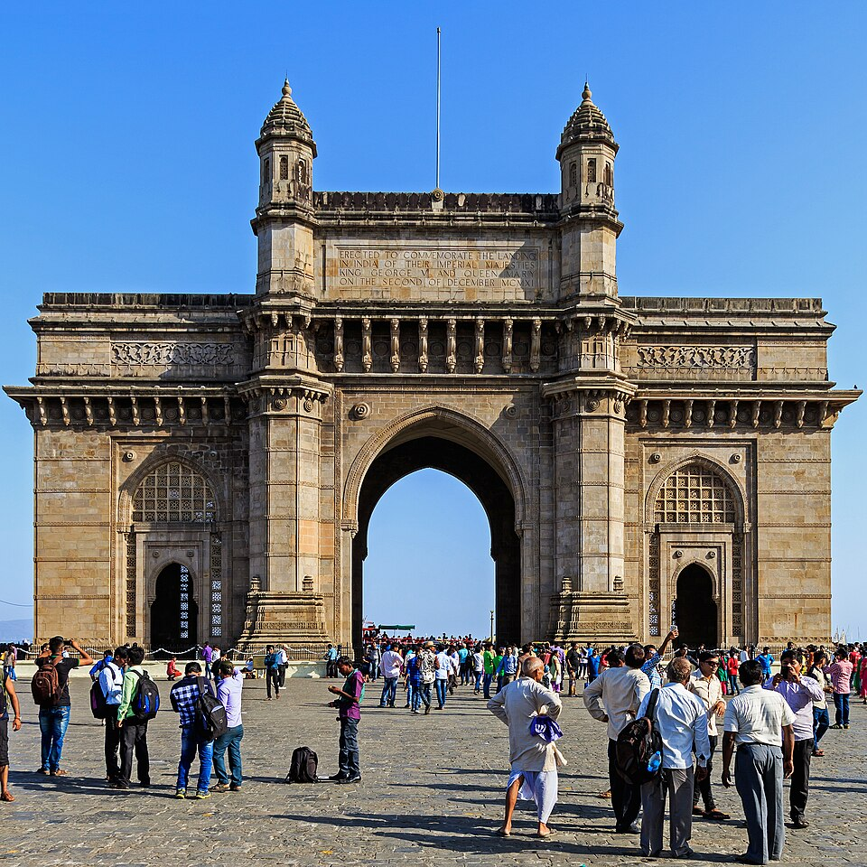
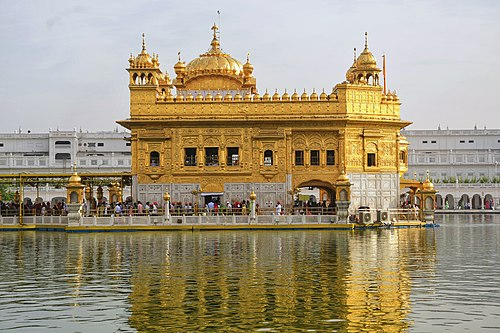
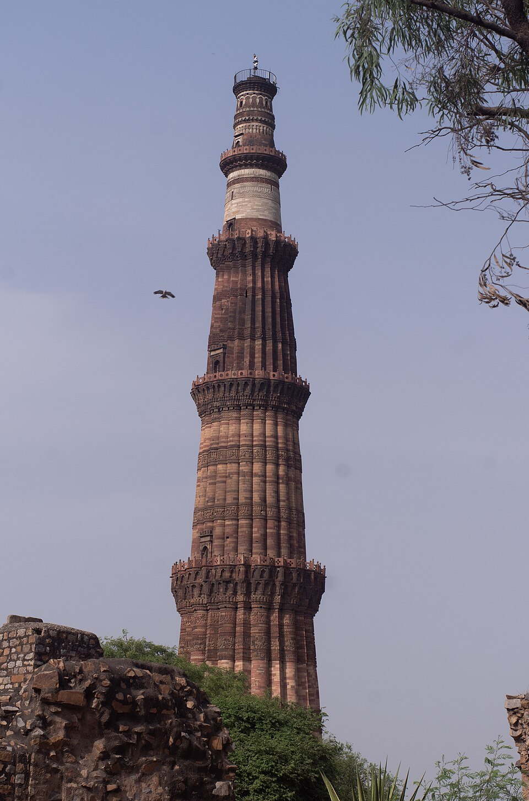
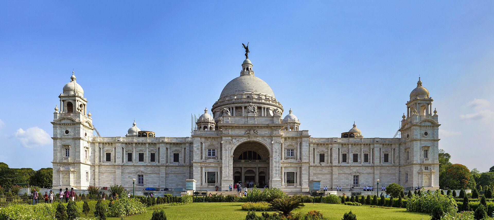
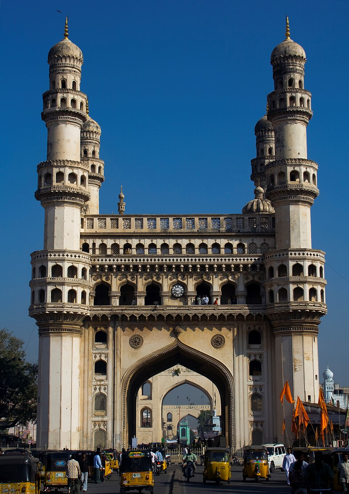
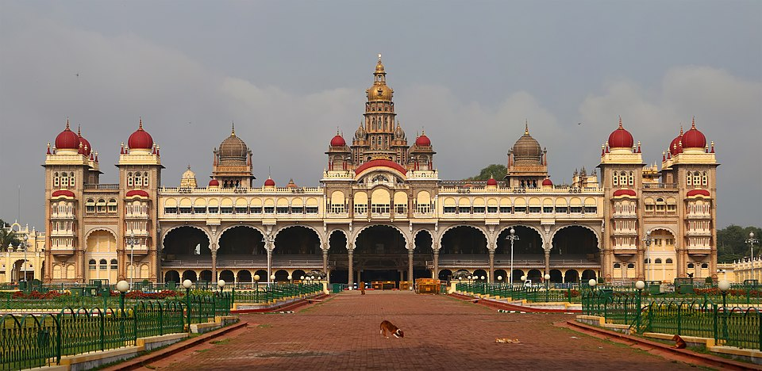
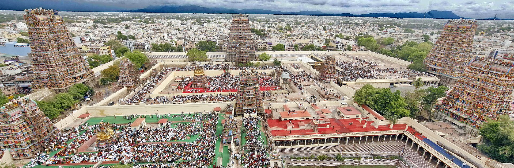

1. Taj Mahal, Agra

A magnificent white marble mausoleum and World Wonder.
2. Hawa Mahal, Jaipur

The "Palace of Winds," made of pink sandstone with 953 windows.
3. Red Fort, Delhi

A massive, historic red sandstone fort of the Mughal Emperors.
4. Gateway of India, Mumbai

An iconic 20th-century arch monument by the sea.
5. Golden Temple, Amritsar

The holiest Sikh Gurdwara, beautifully covered in gold.
6. Qutub Minar, Delhi

A towering 73-meter high minaret built in the 12th century.
7. Victoria Memorial, Kolkata

A vast white marble building dedicated to Queen Victoria.
8. Charminar, Hyderabad

A historic mosque and monument famous for its four arches.
9. Mysore Palace, Mysore

A royal residence known for its incredible architecture.
10. Meenakshi Temple, Madurai

A colorful, intricately carved historic Hindu temple.